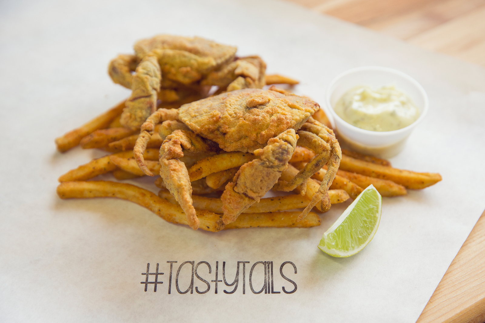

-

-


Our Tasty Tale & charm
A Louisiana Seafood Restaurant in a fast casual environmentBorn and raised in New Orleans, we have been surrounded by artfully crafted and delicious food our entire lives. Growing up next to the gulf, fresh seafood was always readily available and it played a huge role in our upbringing. During lent, our dad would stop by the shack on 4th street, on the Westbank, to pick up live sacks of crawfish for our infamous seafood boils… and that’s where our Tasty Tale began.


our menu
fresh and funpress & accolades
Tasty Tails In The PressGood Food Weekly
Absolutely sublime cuisineMaguisine
Melbourne's most divine eatery - 3/3Fine Dining Magazine
Like no other - Attica is divine
Crawfish the NOLA Way at Tasty Tails
Kristin NortonBoasting what they call “authentic New Orleans seafood,” Tasty Tails offers their signature crawfish both NOLA style and smothered in a Cajun garlic-butter for anyone looking for something a little different.
They get their crawfish straight from Louisiana during the on-season and never serve anything frozen. Putting great care into all of their seafood that is plated, but especially the crawfish, you’ll never be unhappy with your selection here at Tasty Tails. And don’t forget to order yours with the Cajun fries, which are full of the perfect blend of salty and spicy.